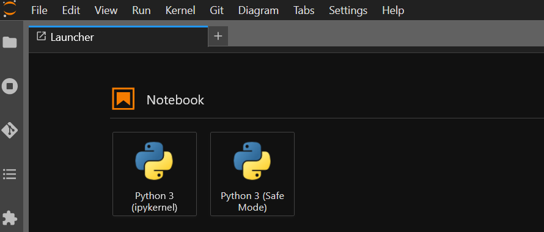
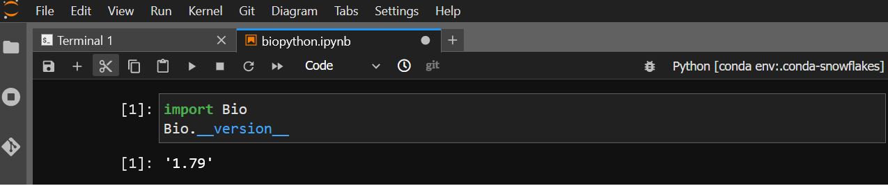

Conda/mamba
It is possible to customize your environment using anaconda and access that environment in your notebooks.
Configuring conda/mamba (only needed once)
From a terminal launcher, run mamba init. Then, write to .bash_profile in your home directory with
the following content:
# Get the aliases and functions
if [ -f ~/.bashrc ]; then
. ~/.bashrc
fi
Using conda/mamba
Conda is well-documented at https://conda.io (its use is outside the scope of this documentation). You can safely
substitute mamba for conda wherever it is listed; it is a faster reimplementation in C++ of conda.
Installing launchers
You must install the ipykernel package in order to make your custom environment available as a notebook kernel. After a minute or so, a new launcher should appear corresponding to your environment; it may be necessary to reload the web page.
Customizing conda with user scripts
For conda environments, you can add preamble scripts to ${CONDA_PREFIX}/etc/conda/activate.d; these will run before
your notebook starts. For example, in the snowflakes conda environment example below,
additional preamble scripts could be added to ~/.conda/env/snowflakes/etc/conda/activate.d.
Example: installing biopython in the snowflakes conda environment
The vanilla launcher screen shows the two default launchers: python, and python-safemode.
{kind=link}
We then install a new environment named snowflakes, including the biopython package:
[burt@jupyter-burt-lpc ~]$ mamba create -q -y -n snowflakes biopython ipykernel
Package Version Build Channel Size
────────────────────────────────────────────────────────────────────────────────────────────────────
Install:
────────────────────────────────────────────────────────────────────────────────────────────────────
+ _libgcc_mutex 0.1 conda_forge conda-forge/linux-64 Cached
+ _openmp_mutex 4.5 2_gnu conda-forge/linux-64 Cached
[ ... snipped for brevity ... ]
+ zeromq 4.3.4 h9c3ff4c_1 conda-forge/linux-64 Cached
Summary:
Install: 66 packages
Total download: 3MB
────────────────────────────────────────────────────────────────────────────────────────────────────
Preparing transaction: ...working... done
Verifying transaction: ...working... done
Executing transaction: ...working... done
The newer launcher now appears, with its full name visible via tooltip, indicating the name of the conda environment:

And the Bio module from biopython is available:
{kind=link}